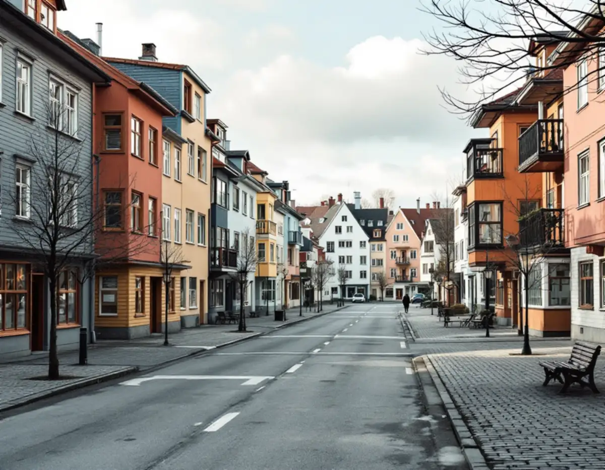
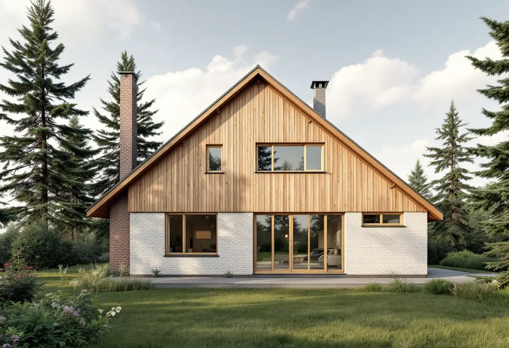
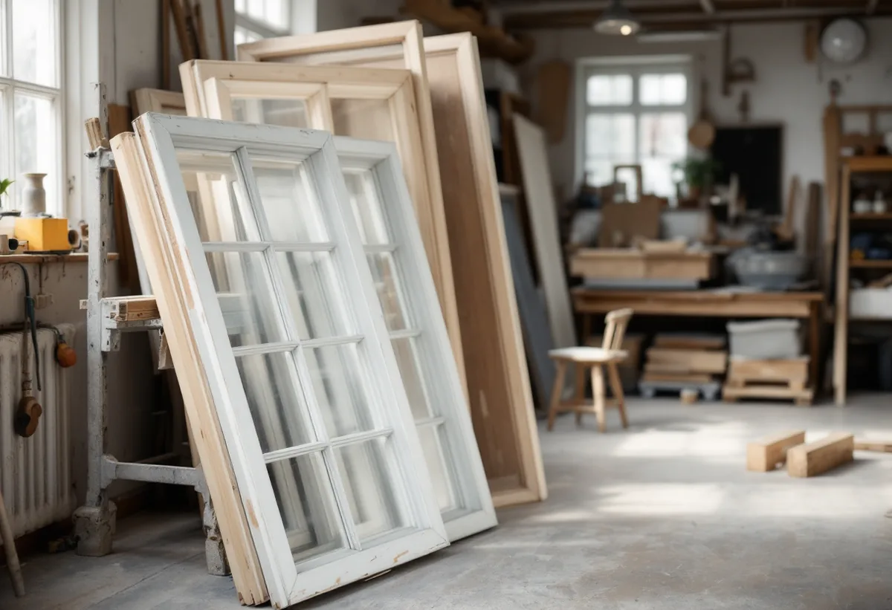

Besiktning
Varje fönster bedöms för sig och resultatet sammanställs.
Ekerös kulturmiljöprogram ger samma råd för flerfamiljshusen i Ekerö centrum som för villorna och sportstugorna: fönster, panel, entréer och räcken ska respekteras. Geal Entreprenad AB renoverar fönster på villor, radhus och flerbostadshus på Ekerö och lagar det som går att laga innan något byts.

Enligt Ekerös kulturmiljöprogram gick uppdraget att utforma Ekerö centrum till arkitekten Ralph Erskine, som ville skapa ny god arkitektur med sociala ambitioner: en småstad intill Mälaren med verksamheter i bottenvåningarna och bostäder för alla. Centrum invigdes 1991 och är ett av landets yngsta kommuncentrum.
Programmet beskriver gestaltningen med variation i skala och färgsättning, och skriver att billiga material och rationella byggmetoder användes för att hålla nere kostnaderna. Husen är i varierad höjd med varierande uttryck och kulörer.

Bland råden för tätorten skriver kulturmiljöprogrammet att byggnaders individuella arkitektur och tidstypiska drag ska respekteras, och att befintliga byggnader bör respekteras när det gäller proportioner, fasadfärg, tak och byggnadsdetaljer som fönster, panel, entréer och räcken. Rådet gäller såväl flerfamiljshusen i Ekerö centrum som villa- och sportstugebebyggelsen.
För en förening eller en villaägare betyder det att ett fönster som renoveras och behåller sina mått, sin indelning och sin kulör ligger i linje med programmet, medan ett byte till en annan typ behöver övervägas noggrannare.
Kulturmiljöprogrammet beskriver villa- och radhusbebyggelse från andra halvan av 1900-talet som det dominerande inslaget på östra Ekerö, med Väsby och dess enhetliga bebyggelse från tidigt 1970-tal och Närlunda som domineras av villor från 1960-talet. I Älvnäs, Gällstaö och Erikssten har sommarbostäder permanentats, och sommarvillor och sportstugor har byggts om eller rivits.
Fönster från så olika tider kräver olika bedömningar. Ett okopplat fönster i en gammal sommarvilla, ett kopplat fönster i en 60-talsvilla och ett fönster i ett 90-talshus i centrum lagas på olika sätt. Om fönsterbyten på Ekerö kan du läsa under fönsterbyte på Ekerö.
Riksantikvarieämbetet skriver att ett fönster utsätts för påfrestningar som liknar dem en båt utsätts för, och att kitt, målning och beslag fortlöpande måste hållas i gott skick. När det är osäkert om fönstren behöver vanligt underhåll eller större reparationer råder myndigheten att man börjar med att besiktiga och analysera varje fönster för sig.
En sådan inventering ger enligt myndigheten underlag för en mer exakt kostnadsberäkning, och utan den är det lätt att döma ut fönster som går att bevara. För en förening i centrum blir besiktningen också underlaget för styrelsens beslut. Myndigheten beskriver underhåll, reparation, komplettering och nytillverkning som olika nivåer av byggnadsvård, och besiktningen visar vilken nivå varje fönster behöver.
Riksantikvarieämbetet påpekar att målningsarbetet med dagens metoder ofta kan göras i en verkstad. Då kan fönsterrenovering göras även vintertid, och resultatet blir enligt myndigheten av högre och jämnare kvalitet.
När bågarna tas ner sätter vi upp ett tillfälligt skydd i karmen. Om måleri på Ekerö i övrigt kan du läsa under målare på Ekerö.

Varje fönster bedöms för sig och resultatet sammanställs.
Fönster för fönster, med lagningar och målning för sig.
Vi bestämmer om bågarna renoveras på plats eller i verkstad.
Skrapning, lagning, kittning och målning med samma kulör.
Bågarna justeras och tätas mot karmen.
Vi går igenom fönstren med dig eller styrelsen.
Reparation och målning av fönster på ett småhus som du äger och bor i räknas som rotarbete hos Skatteverket. Avdraget gäller arbetskostnaden. I en bostadsrätt beror avdraget på vad bostadsrättshavaren ansvarar för enligt stadgarna.
Avdraget är högst 30 procent av arbetskostnaden, högst 50 000 kronor per person och år och högst 75 000 kronor tillsammans med rutavdrag. Material och resor ger inget avdrag. Geal drar avdraget direkt på fakturan.
Antal fönster, skador på trä och kitt, om bågarna renoveras i verkstad, beslag och tätning. Efter ett gratis platsbesök får du ett skriftligt kostnadsförslag.
Byta eller renovera fönster.
Fönsterbyte i Stockholm →Takbyte, takbesiktning och plåtarbeten.
Takläggare på Ekerö →Stenhamra, Kungshatt och Adelsö.
Takrenovering på Ekerö →Utanför plan, strandskydd och eget avlopp.
Attefallshus på Ekerö →Anmälan, mjukt vatten och eget avlopp.
Badrumsrenovering på Ekerö →Nytt hus, vattenskydd och bergvärme.
Byggföretag på Ekerö →Väder, säsong och torktider på öarna.
Fasadmålning på Ekerö →Egnahem, villaområden och äldre gårdar på Ekerö.
Fasadrenovering på Ekerö →Sommarvillor och 60-talsvillor på Ekerö.
Fönsterbyte på Ekerö →Villor i Stenhamra och omgjorda sommarhus.
Golvläggare på Ekerö →Slipa trägolv som ligger på golvvärme.
Golvslipning på Ekerö →Vedspis, egen brunn och nya sopsorteringen.
Köksrenovering på Ekerö →Sommarvillor, stugor och villor på Mälaröarna.
Målare på Ekerö →Takvatten, solceller och plåttak på Ekerö.
Plåtslagare på Ekerö →Altan, gäststuga och snickeri nära Mälaren.
Snickare på Ekerö →Kartan, solcellerna och skorstenen.
Takbyte på Ekerö →Tapet på timmer, papp och skivor.
Tapetsering på Ekerö →Kartan, inglasningen och registret.
Tillbyggnad på Ekerö →Braskamin och större fönster.
Totalrenovering på Ekerö →